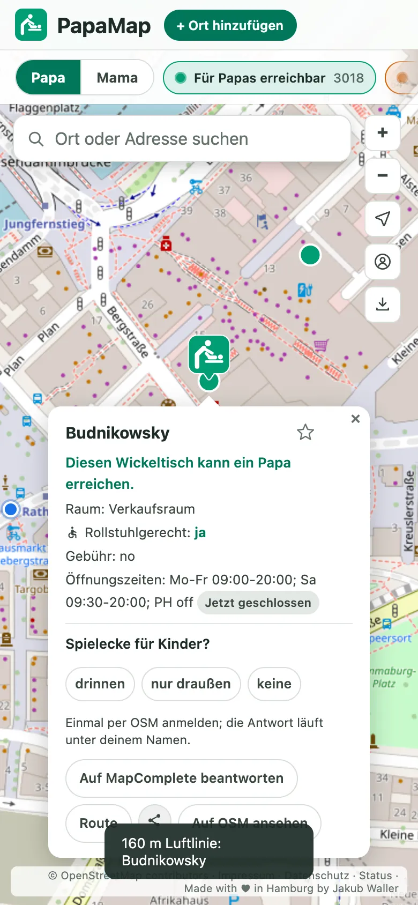

1 Finden
Der nächste Wickeltisch, ein Fingertipp.
- Die Taste unten in der Mitte findet den nächsten Wickeltisch, den du auch erreichst.
- Mit Entfernung in Luftlinie, und mit Öffnungszeiten, wo sie bekannt sind.
- Papa oder Mama: einmal einstellen. Als Papa färbt die Karte die Tische danach ein, ob du an sie herankommst; als Mama zählt jeder Tisch.
